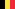
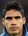
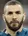
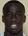

선수단 (SQUAD)
| 번호 |
사진 |
선수 |
출생 (나이) |
포지션 |
국적 |
| 1 |
 |
Thibaut Courtois (티보 쿠르트아) |
1992. 05. 11 (28) |
GK |
 벨기에 |
| 2 |
 |
Daniel Carvajal (다니 카르바할) |
1992. 01. 11 (28) |
DF-RB |
 스페인 스페인 |
| 3 |
 |
Éder Militão (에데르 밀리탕) |
1998. 01. 18 (22) |
DF-CB |
 브라질 브라질 |
| 4 |
 |
Sergio Ramos (세르히오 라모스) (C) |
1986. 03. 30 (34) |
DF-CB |
스페인 |
| 5 |
 |
Raphaël Varane (라파엘 바란) |
1992. 04. 25 (27) |
DF-CB |
 프랑스 프랑스 |
| 6 |
|
Nacho Fernández (나초 페르난데스) |
1990. 01. 18 (30) |
DF-CB |
스페인 |
| 7 |
 |
Eden Hazard (에덴 아자르) |
1991. 01. 07 (29) |
FW-LW |
벨기에 |
| 8 |
 |
Toni Kroos (토니 크로스) |
1990. 01. 04 (30) |
MF-CM |
 독일 독일 |
| 9 |
 |
Karim Benzema (카림 벤제마) |
1987. 12. 19 (32) |
FW-ST |
프랑스 |
| 10 |
 |
Luka Modrić (루카 모드리치) |
1985. 09. 09 (34) |
MF-CM |
 크로아티아 크로아티아 |
| 11 |
 |
Marco Asensio (마르코 아센시오) |
1996. 01. 21 (24) |
FW-RW |
스페인 |
| 12 |
|
Marcelo (마르셀로) |
1988. 05. 12 (32) |
DF-LB |
브라질 |
| 13 |
|
Andriy Lunin (안드리 루닌) |
1999. 02. 11 (21) |
GK |
 우크라이나 우크라이나 |
| 14 |
 |
Casemiro (카세미루) |
1992. 02. 23 (28) |
MF-DM |
브라질 |
| 15 |
 |
Federico Valverde (페데리코 발베르데) |
1998. 07. 22 (21) |
MF-CM |
 우루과이 우루과이 |
| 16 |
|
Borja Mayoral (보르하 마요랄) |
1997. 04. 05 (23) |
FW-CF |
스페인 |
| 17 |
 |
Lucas Vázquez (루카스 바스케스) |
1991. 07. 01 (29) |
MF-RM |
스페인 |
| 18 |
|
Luka Jović (루카 요비치) |
1997. 12. 23 (22) |
FW-ST |
 세르비아 세르비아 |
| 19 |
|
Álvaro Odriozola (알바로 오드리오솔라) |
1995. 12. 14 (24) |
DF-RB |
스페인 |
| 20 |
|
Vinicius Junior (비니시우스 주니오르) |
2000. 07. 12 (19) |
FW-LW |
브라질 |
| 21 |
 |
Martin Ødegaard (마틴 외데고르) |
1998. 12. 17 (17) |
MF-AM |
 노르웨이 노르웨이 |
| 22 |
 |
Isco (이스코) |
1992. 04. 21 (28) |
MF-AM |
스페인 |
| 23 |
 |
Ferland Mendy (페를랑 멘디) |
1995. 06. 08 (25) |
DF-LB |
프랑스 |
| 24 |
 |
Mariano Díaz (마리아노 디아즈) |
1993. 08. 01 (26) |
FW-CF |
 도미니카 공화국 도미니카 공화국 |
| 25 |
 |
Rodygo Goes (호드리구 고이스) |
2001. 01. 09 (19) |
FW-RW |
브라질 |
| 26 |
|
Diego Altube (디에고 알투베) |
2000. 02. 22 (20) |
GK |
스페인 |
| 27 |
 |
Marvin Park (마빈 박) |
2000. 07. 03 (18) |
FW-RW |
스페인 |
| 30 |
|
Serigio Arribas (세르히오 아리바스) |
2001. 09. 30 (18) |
MF-AM |
스페인 |
| 31 |
 |
Antonio Blanco (안토니오 블랑코) |
2001. 07. 23 (19) |
MF-DM |
스페인 |
| 32 |
|
Víctor Chust (빅터 추스트) |
2000. 03. 05 (20) |
DF-CB |
스페인 |
| 33 |
 |
Luis López (루이스 로페즈) |
2001. 05. 08 (19) |
GK |
스페인 |
| 34 |
|
Hugo Duro (휴고 두로) |
1999. 11. 10 (20) |
FW-CF |
스페인 |
| 35 |
|
Miguel Gutiérrez (미겔 구티에레즈) |
2001. 07. 27 (18) |
DF-LB |
스페인 |
| 39 |
|
Pablo Ramón (파블로 아몽) |
2001. 06. 30 (19) |
DF-CB |
스페인 |
| 40 |
 |
Sergio Santos (세르히오 산토스) |
2001. 01. 03 (18) |
DF-RB |
스페인 |
| 42 |
|
Miguel Gutiérrez (루카스 카니잘레스) |
2001. 07. 27 (22) |
DF-LB |
스페인 |
| 42 |
|
Lucas Cañizares (미겔 구티에레즈) |
2002. 05. 20 (18) |
GK |
스페인 |
| 43 |
|
Óscar Aranda (오스카 아란다) |
2002. 04. 29 (18) |
FW-LW |
스페인 |